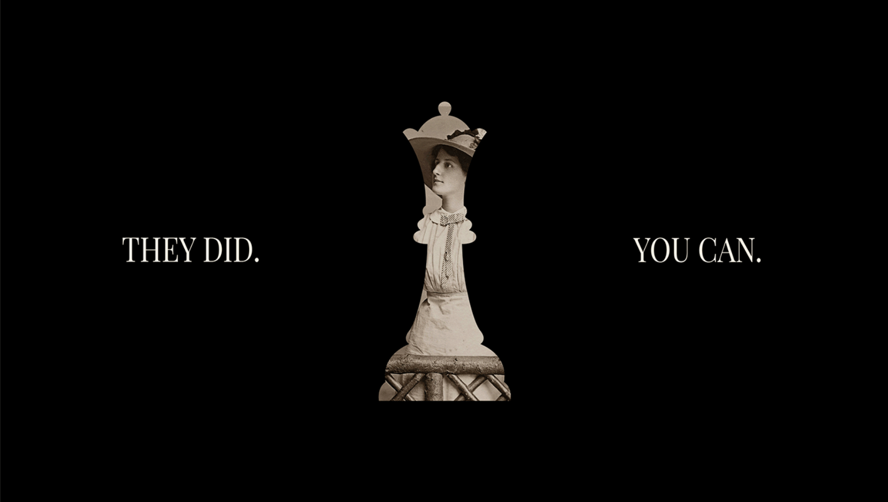
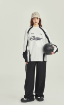
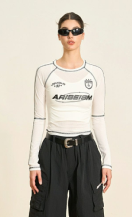
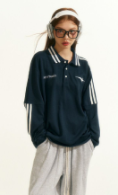
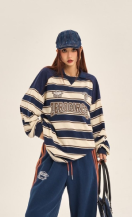
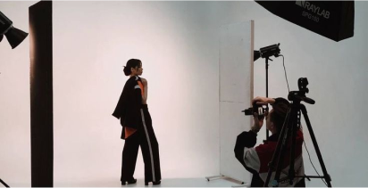

Clothing brand ambassador






The Rise of Prayer: A Trailblazing Model Company In the competitive world of fashion, where trends shift as swiftly as the seasons, a new force emerged to challenge conventions and redefine style. "Prayer" — a bold, innovative brand under the umbrella of the cutting-edge model company Serenity Ventures — quickly became a household name, celebrated for its distinctive designs and meaningful approach to fashion.